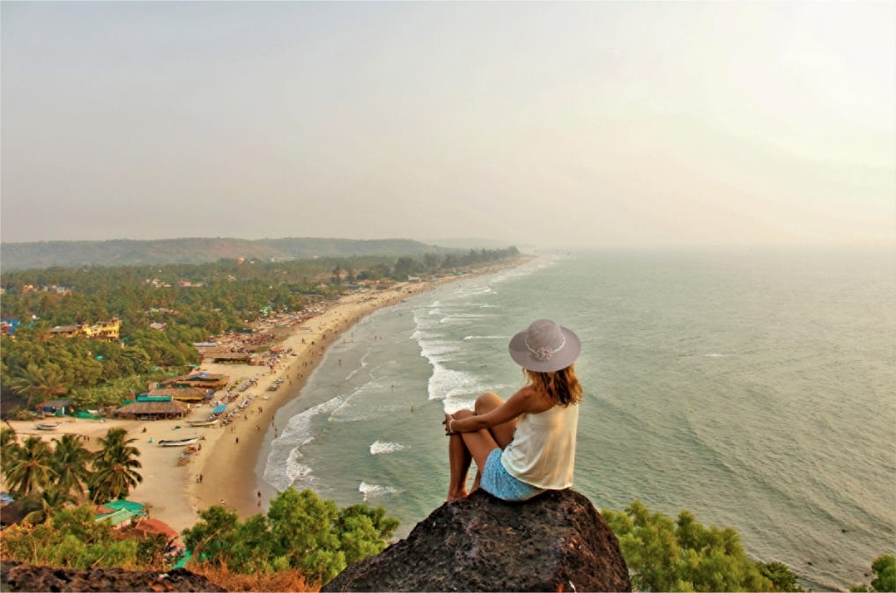
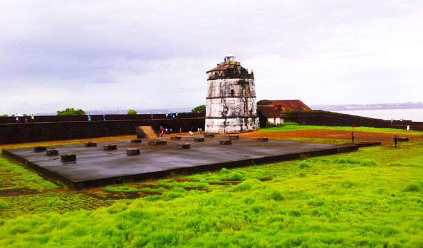
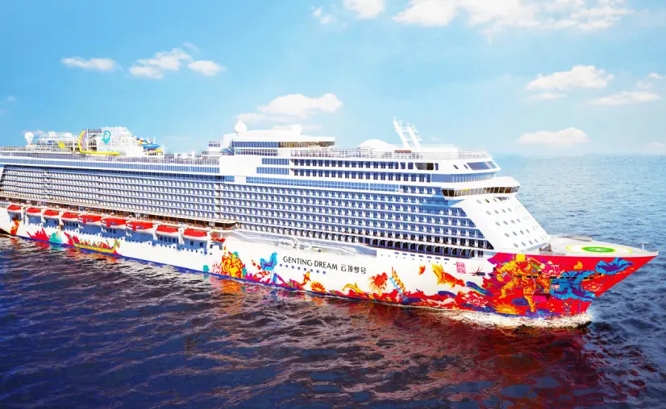
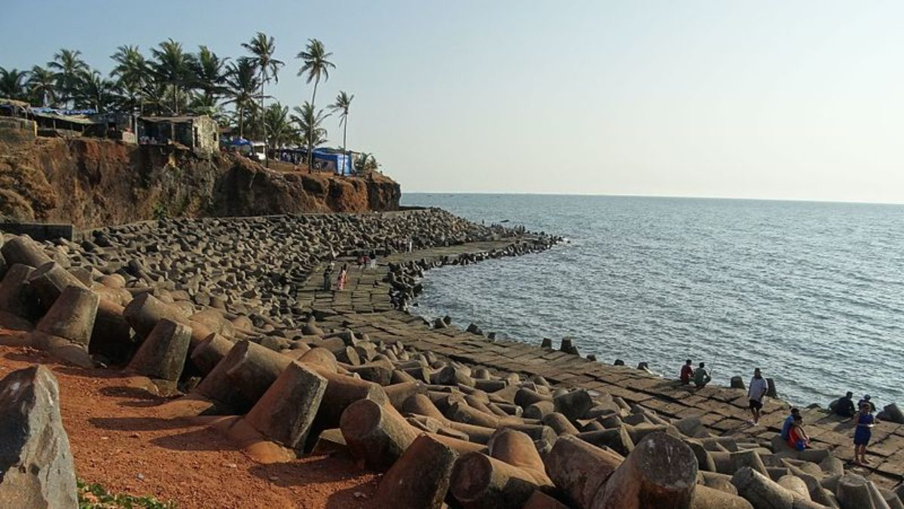
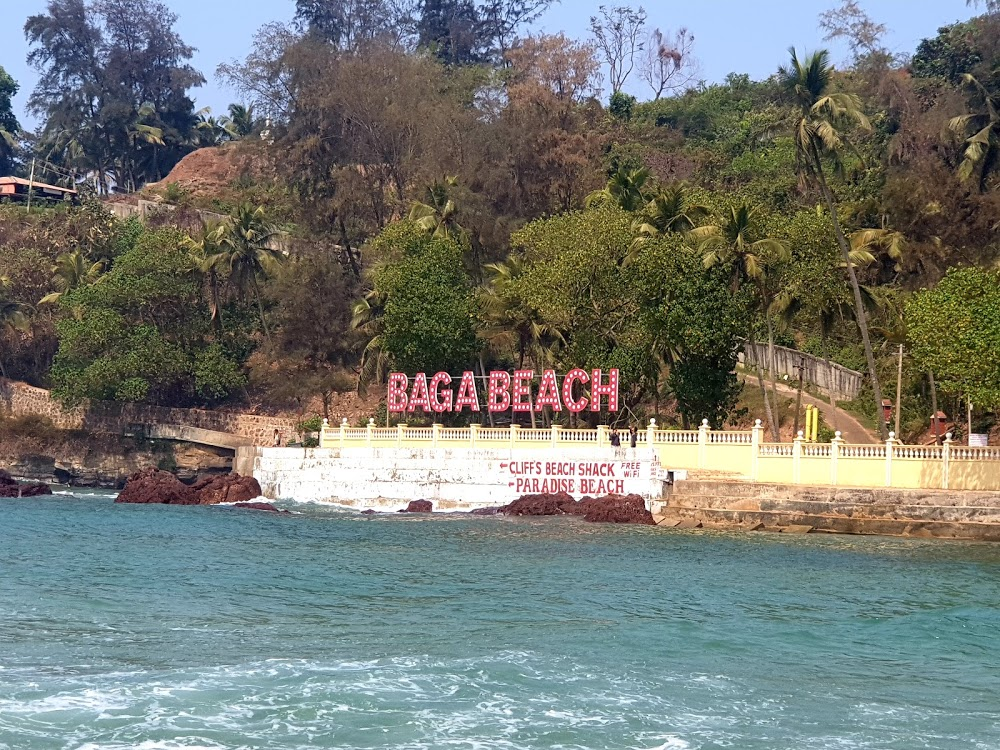
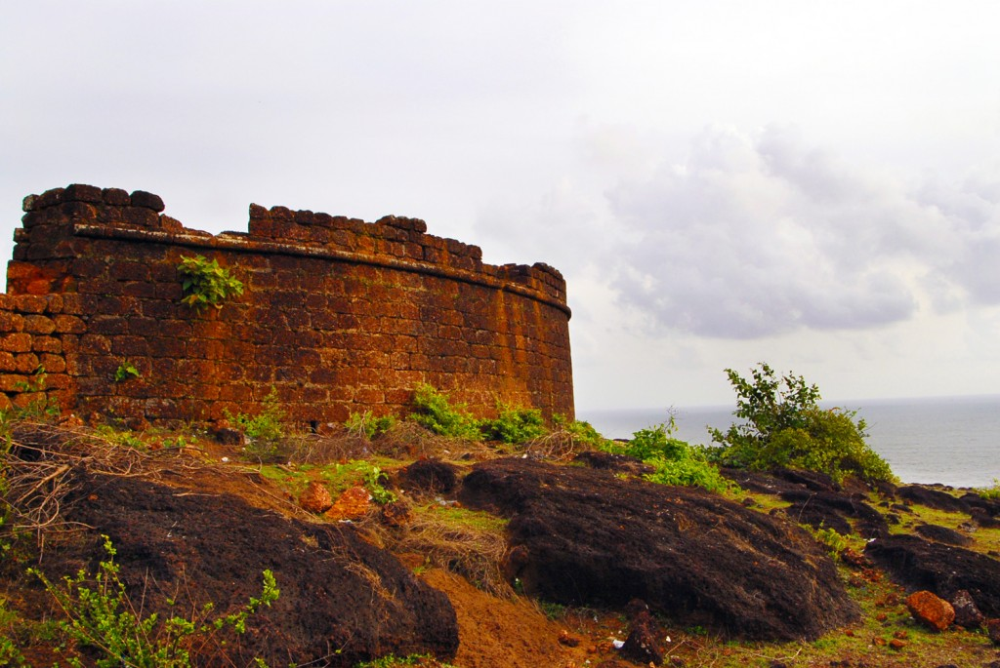

Calangute Beach
Situated 15 km from Panjim, Calangute Beach is the longest beach in North Goa, stretching from Candolim to Baga. Due to its sheer size and popularity, it is a hub for tourists and backpackers from all over the world.
Popular as the "Queen of Beaches", the Calangute Beach of Goa is among the top ten bathing beaches in the world. Being one of the busiest and most commercial beaches of Goa, it is swarming with eating joints, shacks and clubs serving cocktails, beer and seafood. it is a hub for tourists and backpackers from all over the world.
The Calangute Beach is also known for its water sports activities like parasailing, water surfing, banana ride and jet-skiing.its water sports activities like parasailing, water surfing, banana ride and jet-skiing.shacks and clubs serving cocktails, beer and seafood.
Fort Aguada
Fort Aguada is a 17th-century Portuguese fort looking out at the confluence of Mandovi River and the Arabian Sea. The crumbling ramparts of the fort stand on the Sinquerim Beach, approximately 18 km from Panjim. The highlight of the fort is a lone four-storey lighthouse (which is one-of-its-kind in Asia )and a stunning view of the sunset.
Fort Aguada has also been used as Aguada jail. A statue in front of the jail salutes the freedom fighters, giving the fort a touch of patriotism.The highlight of the fort is a lone four-storey lighthouse (which is one-of-its-kind in Asia )and a stunning view of the sunset.
Fort Aguada has also been used as Aguada jail. A statue in front of the jail salutes the freedom fighters, giving the fort a touch of patriotism.


Cruise in Goa
Cruise in Goa allows one to explore the exotic scenery, pristine waters and marvel the breathtaking view of the sunset. There are several types of cruises in Goa ranging from simple evening cruises, elaborate and romantic dinner cruises, backwater cruises, and casino cruises. All of these usually originate from Miramar Beach in Panjim.
Several Goa cruises also offer dinner options along with guaranteed fun and entertainment activities are carried through the day depending upon the daytime, sunset and moonlight. Booking a cruise getaway in Goa is fairly simple as a number of them also offer online booking options. Depending on your requirements and time that you want to spend on the boats, you can choose a package that suits you the best.
Depending on your requirements and time that you want to spend on the boats, you can choose a package that suits you the best.
Dudhsagar Falls
One of India's tallest waterfalls, the Dudhsagar Falls is located inside the Mollem National Park. The majestic falls are a little farther inland approximately 60 km from Panaji on the Goa - Karnataka Border. Literally translating to Sea of Milk , the 310 m high waterfall is divided into four tiers on the Mandovi river and resemble a heavy rush of milk flowing effortlessly down the hill.
The Dudhsagar falls should be visited during the monsoon when it is in full flow and the surrounding deciduous forests are at their verdant best. However, reaching the falls during monsoon if difficult and it is closed if the water level gets too high.
One of India's tallest waterfalls, the Dudhsagar Falls is located inside the Mollem National Park. The majestic falls are a little farther inland approximately 60 km from Panaji on the Goa - Karnataka Border. Literally translating to Sea of Milk , the 310 m high waterfall is divided into four tiers on the Mandovi river and resemble a heavy rush of milk flowing effortlessly down the hill.
The Dudhsagar falls should be visited during the monsoon when it is in full flow and the surrounding deciduous forests are at their verdant best. However, reaching the falls during monsoon if difficult and it is closed if the water level gets too high.
majestic falls are a little farther inland approximately 60 km from Panaji on the Goa - Karnataka Border. Literally translating to Sea of Milk , the 310 m high.


Anjuna Beach
Located near Panjim at a distance of 21 km, Anjuna Beach is among the most popular beaches in North Goa, stretching almost 2km. A hippie paradise of sorts it is characterized by its rocky outcrops. From family outings to adrenaline-filled adventures, Anjuna Beach is famed for its golden coastline, nightclubs, beach shacks, watersports, full-moon parties and flea markets.
Come and rock the night way at Curlies, or dance to some techno at Cafe Lilliput. During the day you can sample some delicious culinary goodness at Burger Factory, Baba Au Rhum, or Basilico. Known as the jewel of Ozran, Anjuna became a favourite haunt for the hippies in the swingin' 60s and still retains the same vibe to this day. You are sure to meet an eclectic bunch of tourists from all over the world when you are here! Anjuna's charm makes it a favourite among both long-stayers and first-timers.
Baga Beach
One of the most popular beaches in North Goa, Baga Beach is located close to Calangute beach, around 30 Km North of Panjim. Baga is the perfect destination to witness the dazzling nightlife of Goa as signature places such as Britto's, Tito's and Mambos are located in the vicinity. Being one of the most visited beaches in the North, Baga also offers a vast range of water sports.
Lined with an array of tattoo parlours, tarot shops, palmistry shops, spas, sun decks and some legendary shacks, it gives you a chance to live out your perfect beach holiday. If you are not a party person, you also have the option of starting your mornings with some beach Yoga, having a nutritious breakfast by the sea, and then just spend the day reading quietly on beach recliner. There is something for every kind of traveller in Baga!
If you are not a party person, you also have the option of starting your mornings with some beach Yoga, having a nutritious breakfast by the sea, and then just spend the day reading quietly on beach recliner.


Chapora Fort
Chapora Fort, located 10 km away from Mapusa, is undeniably one of the most famous forts in Goa. Built by the Portuguese in 1717, Chapora Fort has a long and fascinating history attached to it. More popularly known as the 'Dil Chahta Hai Fort', its claim to fame was the 2001 Bollywood blockbuster shot here. A scintillating escape, it offers beautiful views of the sea and Chapora River.
Chapora Fort has passed through the possession of numerous rulers over a long period of time, right from the Portuguese to the Marathas and the ruins tell a story of their own! You can still see the entry points of the two tunnels that were built by the Portuguese to use as an escape in times of emergency.it offers beautiful views of the sea and Chapora River.
A scintillating escape, it offers beautiful views of the sea and Chapora River.undeniably one of the most famous forts in Goa.